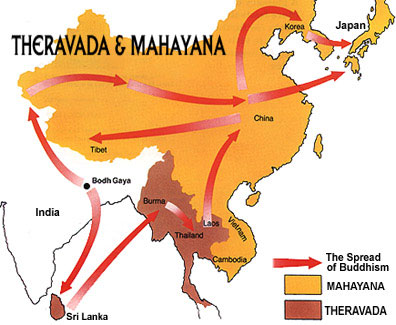

Buddhism is a spiritual tradition that focuses on personal spiritual development and the attainment of a deep insight into the true nature of life. There are 376 million followers worldwide.
Buddhists seek to reach a state of nirvana, following the path of the Buddha, Siddhartha Gautama, who went on a quest for Enlightenment around the sixth century BC.
There is no belief in a personal god.
Buddhists believe that nothing is fixed or permanent and that change is always possible.The path to Enlightenment is through the practice and development of morality, meditation and wisdom.
Buddhists believe that life is both endless and subject to impermanence, suffering and uncertainty. These states are called the tilakhana, or the three signs of existence. Existence is endless because individuals are reincarnated over and over again, experiencing suffering throughout many lives.
It is impermanent because no state, good or bad, lasts forever. Our mistaken belief that things can last is a chief cause of suffering.
The history of Buddhism is the story of one man's spiritual journey to enlightenment, and of the teachings and ways of living that developed from it.
The Buddha
Siddhartha Gautama, the Buddha, was born into a royal family in present-day Nepal over 2500 years ago. He lived a life of privilege and luxury until one day he left the royal enclosure and encountered for the first time, an old man, a sick man, and a corpse. Disturbed by this he became a monk before adopting the harsh poverty of Indian asceticism. Neither path satisfied him and he decided to pursue the ‘Middle Way’ - a life without luxury but also without poverty.
Buddhists believe that one day, seated beneath the Bodhi tree (the tree of awakening), Siddhartha became deeply absorbed in meditation and reflected on his experience of life until he became enlightened.
By finding the path to enlightenment, Siddhartha was led from the pain of suffering and rebirth towards the path of enlightenment and became known as the Buddha or 'awakened one'.

Schools of Buddhism
There are numerous different schools or sects of Buddhism. The two largest are Theravada Buddhism, which is most popular in Sri Lanka, Cambodia, Thailand, Laos and Burma (Myanmar), and Mahayana Buddhism,a which is strongest in Tibet, China, Taiwan, Japan, Korea, and Mongolia.
The majority of Buddhist sects do not seek to proselytise (preach and convert), with the notable exception of Nichiren Buddhism.
All schools of Buddhism seek to aid followers on a path of enlightenment.

Buddha as Philosopher
This entry concerns the historical individual, traditionally called Gautama, who is identified by modern scholars as the founder of Buddhism. According to Buddhist teachings, there have been other Buddhas in the past, and there will be yet more in the future. The title ‘Buddha’, which literally means ‘awakened’, is conferred on an individual who discovers the path to nirvana, the cessation of suffering, and propagates that discovery so that others may also achieve nirvana. If the teaching that there have been other Buddhas is true, then Gautama is not the founder of Buddhism.
This entry will follow modern scholarship in taking an agnostic stance on the question of whether there have been other Buddhas, and likewise for questions concerning the superhuman status and powers that some Buddhists attribute to Buddhas.The concern of this entry is just those aspects of the thought of the historical individual Gautama that bear on the development of the Buddhist philosophical tradition.
The Buddha will here be treated as a philosopher. To so treat him is controversial, but before coming to why that should be so, let us first rehearse those basic aspects of the Buddha’s life and teachings that are relatively non-controversial. Tradition has it that Gautama lived to age 80. Up until recently his dates were thought to be approximately 560–480 BCE, but many scholars now hold that he must have died around 405 BCE. He was born into a family of some wealth and power, members of the Śākya clan, in the area of the present border between India and Nepal. The story is that in early adulthood he abandoned his comfortable life as a householder (as well as his wife and young son) in order to seek a solution to the problem of existential suffering. He first took up with a number of different wandering ascetics (śramanas) who claimed to know the path to liberation from suffering. Finding their teachings unsatisfactory, he struck out on his own, and through a combination of insight and meditational practice attained the state of enlightenment (bodhi) which is said to represent the cessation of all further suffering. He then devoted the remaining 45 years of his life to teaching others the insights and techniques that had led him to this achievement.
Gautama could himself be classified as one of the śramanas. That there existed such a phenomenon as the śramanas tells us that there was some degree of dissatisfaction with the customary religious practices then prevailing in the Gangetic basin of North India. These practices consisted largely in the rituals and sacrifices prescribed in the Vedas. Among the śramanas there were many, including the Buddha, who rejected the authority of the Vedas as definitive pronouncements on the nature of the world and our place in it (and for this reason are called ‘heterodox’). But within the Vedic canon itself there is a stratum of (comparatively late) texts, the Upaniṣads, that likewise displays disaffection with Brahmin ritualism. Among the new ideas that figure in these (‘orthodox’) texts, as well as in the teachings of those heterodox śramanas whose doctrines are known to us, are the following: that sentient beings (including humans, non-human animals, gods, and the inhabitants of various hells) undergo rebirth; that rebirth is governed by the causal laws of karma (good actions cause pleasant fruit for the agent, evil actions cause unpleasant fruit, etc.); that continual rebirth is inherently unsatisfactory; that there is an ideal state for sentient beings involving liberation from the cycle of rebirth; and that attaining this state requires overcoming ignorance concerning one’s true identity. Various views are offered concerning this ignorance and how to overcome it.
The Bhagavad Gītā (classified by some orthodox schools as an Upaniṣad) lists four such methods, and discusses at least two separate views concerning our identity: that there is a plurality of distinct selves, each being the true agent of a person’s actions and the bearer of karmic merit and demerit but existing separately from the body and its associated states; and that there is just one self, of the nature of pure consciousness (a ‘witness’) and identical with the essence of the cosmos, Brahman or pure undifferentiated Being.
The Buddha agreed with those of his contemporaries embarked on the same soteriological project that it is ignorance about our identity that is responsible for suffering. What sets his teachings apart (at this level of analysis) lies in what he says that ignorance consists in: the conceit that there is an ‘I’ and a ‘mine’.
This is the famous Buddhist teaching of non-self (anātman). And it is with this teaching that the controversy begins concerning whether Gautama may legitimately be represented as a philosopher. First there are those who (correctly) point out that the Buddha never categorically denies the existence of a self that transcends what is empirically given, namely the five skandhas or psychophysical elements. While the Buddha does deny that any of the psychophysical elements is a self, these interpreters claim that he at least leaves open the possibility that there is a self that is transcendent in the sense of being non-empirical.To this it may be objected that all of classical Indian philosophy—Buddhist and orthodox alike—understood the Buddha to have denied the self tout court. To this it is sometimes replied that the later philosophical tradition simply got the Buddha wrong, at least in part because the Buddha sought to indicate something that cannot be grasped through the exercise of philosophical rationality. On this interpretation, the Buddha should be seen not as a proponent of the philosophical methods of analysis and argumentation, but rather as one who sees those methods as obstacles to final release.
Karma and Rebirth
It is not just classical Indian self-theorists who have found this objection persuasive. Some Buddhists have as well. Among these Buddhists, however, this has led to the rejection not of non-self but of rebirth. (Historically this response was not unknown among East Asian Buddhists, and it is not rare among Western Buddhists today.) The evidence that the Buddha himself accepted rebirth and karma seems quite strong, however. The later tradition would distinguish between two types of discourse in the body of the Buddha’s teachings: those intended for an audience of householders seeking instruction from a sage, and those intended for an audience of monastic renunciates already versed in his teachings. And it would be one thing if his use of the concepts of karma and rebirth were limited to the former. For then such appeals could be explained away as another instance of the Buddha’s pedagogical skill (commonly referred to as upāya). The idea would be that householders who fail to comply with the most basic demands of morality are not likely (for reasons to be discussed shortly) to make significant progress toward the cessation of suffering, and the teaching of karma and rebirth, even if not strictly speaking true, does give those who accept it a (prudential) reason to be moral.